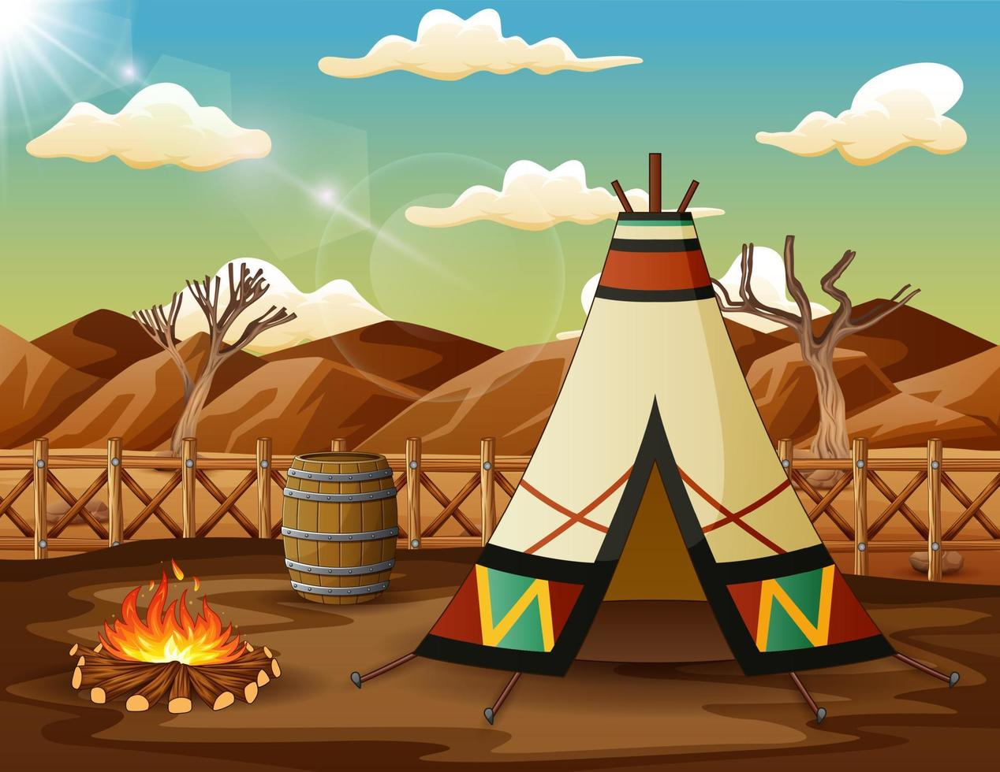

Bem, esse é meu primeiro dia de aula
essa escola não me parece muito convidativa
Voccê vai embora.
Final feliz!!!
Que paz! nada como meu barraco
Agora você pode voltar e cometer o maior erro da sua vida caso queira,ou apenas aceitar seu final feliz
Você entra na escola e caminha para sua sala
Enquanto você caminhava para a sua sala você toma uma tijolada e desmaia.
 Você acorda no meio do mato com um mapa
Você acorda no meio do mato com um mapa
Você pode ir por 2 caminhos diferentes:

Você caminha e encontra uma casa
Bad end
Ao tentar investigar a casa você toma outra tijolada e morre.

Você encontra uma tribo de indio
Você encontra uma onça selvagem
Você tenta correr mas a onça é muito rapida
Você toma uma tijolada da onça e morre
O chefe da tribo te ajuda e te oferece um cachimbo da paz
GUUD END
Você desiste de voltar para casa e passa a viver como indio
mas morre logo em seguida porque não aguentou 2 cachimbo da paz.
Você encontra uma bifurcação
Você volta para a escola
Você entra pela diretoria e segue para sua sala